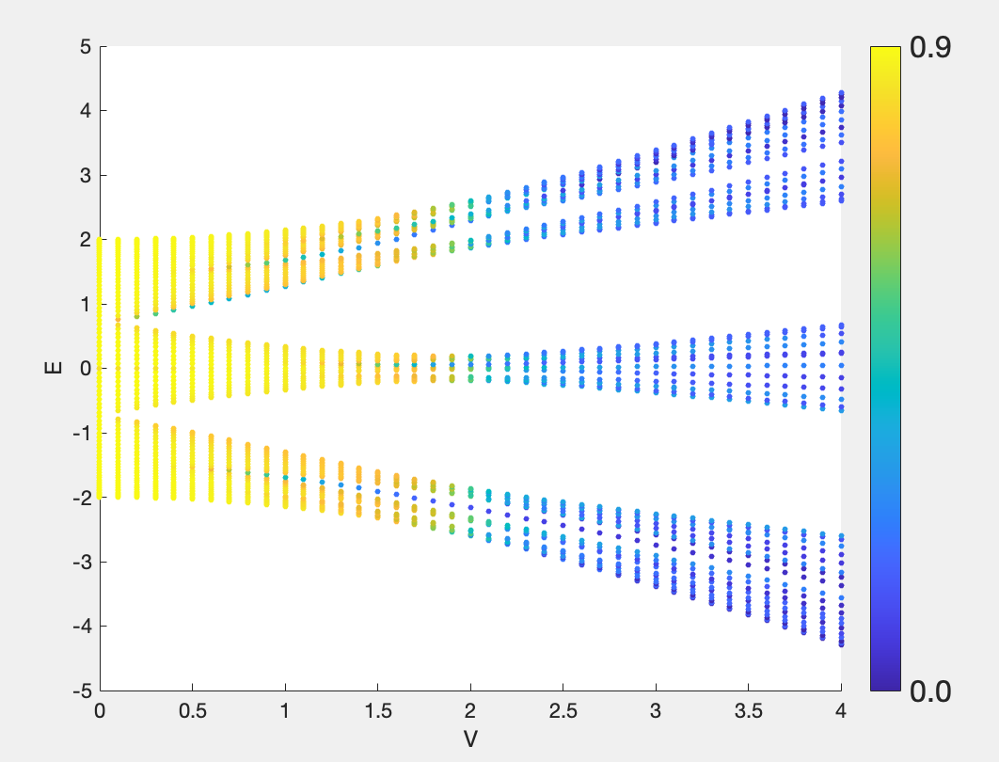

准周期1
1. 简介
准周期模型一般指形式如下的模型 \begin{align} H = \sum_i (t_i c_i^{\dagger} c_{i+1} + {\rm H.c.}) + v_i c_i^{\dagger} c_i , \label{eq1} \end{align} 其中 $t_i$ 或 $v_i$ 具有即不像 Anderson 模型那样无序，又完全不具有平移对称性的性质。以后者为例，固定 $t_i = t$，取 $v_i$ 为某准周期势如 $v_i = \lambda {\rm cos}(2 \pi \beta n + \phi)$，$\beta$ 为某无理数，一般取为 $\dfrac{\sqrt{5} - 1}{2}$。由于无理数 $\beta$ 的存在，整条链不存在周期性，但格点与格点之间又不是完全没有关联，我们可以理解为所有格点的在位能取一系列存在关联的伪随机数。在这种情况下，特定参数范围内会出现局域态。
2. 自对偶性
形式如 $v_i = \lambda {\rm cos}(2 \pi \beta n + \phi)$ 的准周期势最早是由 Aubry 和 André 提出来的，所以我们现在一般叫它 AA 模型。后来大家发现他本质上对应着 2D Harper 模型，所以也有人叫他 AAH 模型。AAH 模型中一个很有意思的性质是他的自对偶性， 即模型哈密顿量在特定参数上的实空间和倒空间形式一致。换句话说就是，AAH 模型在实空间下的哈密顿量 \begin{equation} H = -t \sum \limits_n (a_n^\dagger a_{n + 1} + {\rm H.c.}) - V \sum \limits_n {\rm cos}(2\pi \alpha n)a_n^\dagger a_n \end{equation} 经过如下傅立叶变换 \begin{equation} b_k = \frac{1}{\sqrt{N}} \sum \limits_n e^{i k (2 \pi \alpha n)}a_n \end{equation} 可以得到 k 空间下的哈密顿量 \begin{equation} H = -\frac{V}{2} \sum \limits_k (b_k^\dagger b_{k + 1} + {\rm H.c.}) - 2t \sum \limits_k {\rm cos}(2\pi \alpha k)b_k^\dagger b_k \end{equation} 而你不难发现，当 $V = \pm 2t$ 时，AAH 模型在傅立叶变换前后形式一致。
3. 自对偶点即”迁移率边“
准周期体系中有一条被视作不可打破的规则，就是体系的自对偶点往往对应着系统的"迁移率边"，或者说扩展态和局域态的临界点。 一般认为这里的物理图像是，当实空间的波函数趋于扩展时，你做一个傅里叶变换他会趋于局域，而当实空间的波函数趋于局域时，傅里叶变换会使其趋于扩展。 因此在自对偶点上，自对偶所保证的傅里叶变换前后系统一致性意味着在这个点上波函数既不扩展也不局域，而是处于一种临界态，即扩展和局域的临界点。 当系统的无序强度小于这个临界值时，系统是扩展的，而当无序强度大于这个临界值时，系统是局域的。 以 AA 模型为例，当 $V < 2t$ 时，体系中所有态均为扩展态； 当 $V> 2t$ 时，体系中所有态均为局域态；而当 $V = 2t$ 时， 体系中所有态均处于临界态。
这一点和传统的 Anderson 模型中的局域化有本质区别。换句话说，当考虑一维系统时 加任意小的没有任何关联的无序都会导致体系中所有态被局域化； 而当你的无序势是通过一个准周期势，标度律就失效了，系统就允许扩展态的出现。
4. 代码
以下是一个简单的 Matlab 代码计算 AAH 本征态的局域化性质
% calculate D2/IPR versus E and V of AA model
% Date: 2024/03/25 more information in notebook: note10, 20240317
clear; clc; close all;
start_time = tic;
% Parameters
it = 10; % iteration
[Fn1, Fn] = Fibonacci(it);
L = Fn;
t = 1;
V_sec = 0 : 0.1 : 4;
alpha = Fn1 / Fn;
theta = 0;
h = 0;
phi = theta + 1i * h;
p = 0; % p = 0 for open boundary conditions and p = 1 for pbc
%%
% Section: calculate
%-----------------------------------------------------------------------------------------------------------
evals_total = [];
IPR_map = [];
for V = V_sec
fprintf('V = %f\n', V);
% Generate the hamiltonian of H1
H1 = hami(L, t, V, alpha, theta, h, p);
% Calculate its eigenenergies and wavefunction and sort the eigenenergies
[vec1,E1] = eig(H1);
[E1,index_1] = sort(real(diag(E1))); % remind the function sort(E1): here E1 should be 1*N not N*N !!!
vec1= vec1(:,index_1);
evals_total = [evals_total, E1];
%-------------------------normalizing-------------------------------
for a = 1 : 1 : size( vec1, 1 )
vec_zero = vec1( 1 : size(vec1, 1), a);
vec_uni(:,a) = ( real( vec_zero ).^2 + imag(vec_zero).^2) / sum( real(vec_zero).^2 + imag(vec_zero).^2 );
end
% calculate IPR and MIPR
for a = 1:1:size(vec1,1)
IPR(a, 1) = sum( vec_uni(:,a).^2 );
end
IPR_map = [IPR_map, IPR];
end
D2_map = -log(IPR_map) / log(Fn);
end_time = toc(start_time);
fprintf('运行时间（秒）= %f\n', end_time);
%%
% Section: plot
%-----------------------------------------------------------------------------------------------------------
figure();
for a = 1 : size(V_sec, 2)
X(a * size(evals_total, 1) - size(evals_total, 1) + 1 : a * size(evals_total, 1)) = V_sec(a);
end
X = X';
for a = 1 : size(V_sec, 2)
Y(a * size(evals_total, 1) - size(evals_total, 1) + 1 : a * size(evals_total, 1)) = evals_total(:,a);
end
Y = Y';
for a = 1 : size(V_sec, 2)
D2_plot(a * size(evals_total, 1) - size(evals_total, 1) + 1 : a * size(evals_total, 1)) = D2_map(:,a);
end
D2_plot = D2_plot';
%colormap hot(summer,winter)
colormap default
scatter(X,Y,10,D2_plot,'filled')
% set colorbar
colorbar
c = colorbar;
c.FontSize = 16;
c.Ticks = linspace(min(D2_plot(:)), max(D2_plot(:)), 2); % 设置刻度位置
c.TickLabels = arrayfun(@(x) sprintf('%.1f', x), c.Ticks, 'UniformOutput', false); % 设置刻度标签
%c.Position = [0.93, 0.4, 0.02, 0.2]; % [left, bottom, width, height]
xlabel('V');
ylabel('E')
%%
% Some functions
%-----------------------------------------------------------------------------------------------------------
function [Fn1, Fn] = Fibonacci(iterations)
Fn1 = 0;
Fn = 1;
for n = 1:iterations
Fn2 = Fn1;
Fn1 = Fn;
Fn = Fn1 + Fn2;
end
end
function H00 = hami(L, t, V, alpha, theta, h, p)
% on-site energy
for a = 1 : 1 : L
H00(a, a) = V * cos ( 2*pi*alpha*a + theta + 1i * h );
end
% hopping term
for a = 1 : 1 : L - 1
H00(a, a + 1) = t;
H00(a + 1, a) = t;
end
if (p == 1)
H00(1, L) = t;
H00(L, 1) = t;
end
% check the hermitian of H00
%if sum(sum(H00 ~= H00')) ~= size(H00,1)^2
% error('wrong, H00 should be hermitian');
%end
end
结果如图所示，黄色代表扩展态，蓝色代表局域态，可以看到临界点在 $V = 2t$ 附近。
